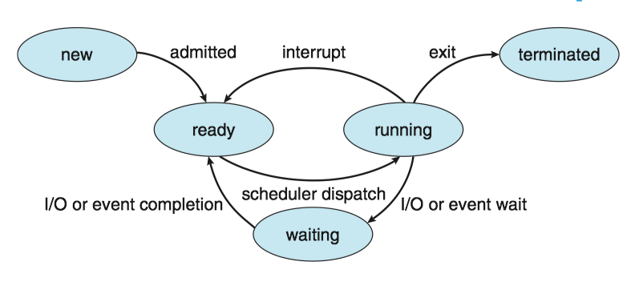
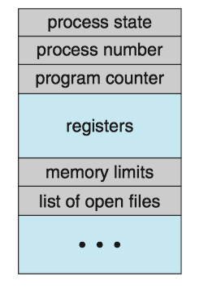
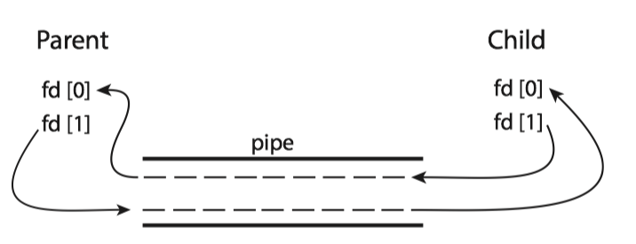

- 1 Process concept
- 2 Process scheduling 进程调度
- 3 Operating on Processes
- 4 Interprocess communication
- 5 IPC in shared-memory system
- 6 IPC in message-passing system
- 7 Examples of IPC
- 8 Communication in Client-server system
1 Process concept
1.1 The process
Process (进程) is a program in execution.
- Process is the unit of work in a modern computing system
The status of the current activity of a process is represented by the value of the program counter and the contents of the processor's registers.
A program by itself is not a process.
- A program is a passive entity, such as a file containing a list of instructions stored on disk
- A process is an active entity, with a program counter specifying the next instruction to execute
1.2 Process state
A process may be in one of the following states:
- New(新建). The process is being created. 进程正在被创建
- Running(运行). Instructions are being executed.指令正在被执行
- Waiting(等待). The process is waiting for some event to occur(such as an I/O completion or reception of a signal). 进程等待某些事件发生
- Ready(就绪). The process is waiting to be assigned to a processor.进程等待分配处理器
- Terminated(终止). The process has finished execution.进程执行完毕
Diagram of process state:

1.3 Process control block
Each process is represented by a process control block(PCB, 进程控制块), it contains
- Process state(进程状态)
- Program counter(程序计数器)
- CPU registers(CPU寄存器)
- CPU-scheduling information(CPU调度信息): a process priority, pointers to scheduling queues, and any other scheduling parameters.
- Memory-management information(内存管理信息)
- Accounting information(记账信息): the amount of CPU and real time used, time limits, account numbers, process numbers and so on.
- I/O status information(I/O状态信息): the list of I/O devices allocated to the process, a list of open files
Process Control Block:

The process control block in Linux is represented by the C structure task_struct ('include/linux/sched.h')， CODE LINK
- Within the Linux kernel, all active processes are represented using a doubly linked list of task struct.
Task_strut:

2 Process scheduling 进程调度
The process scheduler(进程调度程序) selects an available process for program execution on a core.
- Each CPU core can run one process at a time.
- The number of processes currently in memory is known as the degree of multiprogramming.
2.1 Scheduling Queues
Ready queue(就绪队列): the status of processes are ready.
- generally stored as a linked list, its header contains pointers to the first PCB in the list, each PCB includes a pointer field that points to next PCB in the ready queue.
Wait Queue(等待队列): the status of processes are waiting.
Queueing-diagram representation of process scheduling:

2.2 context switch
Here the context of a process is represented in the PCB of the process, including the value of the CPU registers, the process state, and memory-management information.
An operating system performs a context switch（上下文切换) when it switches from running one process to running another.
- The kernel saves the context of the old process into its PCB and restore the saved context of the new process scheduled to run.
- Context-switch time is overhead; the system does no useful work while switching.
- A typical speed is a several microseconds.
- Context-switch times are highly dependent on hardware support.
Context switch from an old process to a new process:

3 Operating on Processes
3.1 Process creation
A process may create several new processes.
- the creating process is called a parent process.
- the new process is called a child process .

3.2 Process termination
A process terminates when it finishes executing its final statement and asks the operating system to delete it by using the exit() system call.
- cascading termination(级联终止): if a process terminates (either normally or abnormally), then all its children must also be terminated.
- A process that has terminated, but whose parent has not yet called
wait(), is known as a zombie process(僵尸进程). - if a parent did not invoke
wait()and instead terminated, then leaving its child processes as orphan processes(孤儿进程).- Unix system may assign the
initprocess as the new parent to orphan processes, and theinitprocess periodically invokeswait().
- Unix system may assign the
4 Interprocess communication
Processes may be either independent processes(独立进程) or cooperating processes(协同进程).
- A process is independent if it does not share data with any other processes executing in the system.
- A process is cooperating if it can affect or be affected by the other processes executing in the system.
Advantages of process cooperation:
- Information sharing 信息共享
- Computation speedup 加速运算
- Modularity 模块化
Cooperating process require an interprocess communication (IPC，进程间通信) mechanism that will allow them to exchange data. There are two fundamental models of IPC:
- shared memory（共享内存）: a region of memory is shared by cooperating process. Process can exchange information by reading and writing data to the shared region.
- Shared memory can be faster than message passing.
- message passing(消息传递)： communication takes place by means of messages exchanged between the cooperating processes.
- Message passing is useful for exchanging smaller amounts of data, because no conflicts need be avoided.
- Message passing is easier to implement in a distributed system than shared memory.

5 IPC in shared-memory system
Here, we explore the POSIX API for shared memory. POSIX shared memory is organized using memory-mapped files (内存映射文件), which associate the region of shared memory with a file. A process must first create a shared-memory object using the shm_open() system call, as follows:
fd = shm_open(name, O_CREAT | O_RDWR, 0666);
ftruncate(fd, 4096);
mmap(0, SIZE, PROT_READ | PROT_WRITE, MAP_SHARED, fd, 0);
- A successful call to
shm_open()returns an integer file descriptor for the shared-memory object. - Once the object is established, the
ftruncatefunction is used to configure the size of the object in bytes. - Finally, the
mmap()function establishes a memory-mapped file containing the shared-memory object. It returns a pointer to the shared
6 IPC in message-passing system
A message-passing facility provides at least two operations:
- send(message)
- receive(message)
If P and Q wish to communicate, they need to
- establish a communication link(通信连接) between them
- exchange messages via send/receive
Here are several methods for logically implementing a communication link between processes:
- Direct or indirect communication 直接/间接通信
- Synchronous or asynchronous communication 同步/异步同步
- Automatic or explicit buffering 自动/显式缓冲
6.1 Direct/Indirect communication
(1) Direct Communication
Under direct communication, each process that wants to communicate must explicitly name the recipient or sender of the communication.
- send(P, message) - send a message to process P.
- receive(Q, message) - receive a message from process Q
A communication link in this scheme has the following properties:
- A link is established automatically between every pair of processes that want to communicate.
- A link is associated with exactly two processes.
- Between each pair of processes, there exists exactly one link.
Cons:
- limited modularity of the resulting process definitions. Changing the identifier of a process may necessinate examining all other process definitions.
- any such hard-coding techniques, are less desirable.
(2) Indirect Communication
With indirect communication, the message are sent to and receive from mailboxes, or ports.
- send(A, message) - send a message to mailbox A
- receive(A, message) - receive a message from mailbox A
A mailbox can be viewed abstractly as an object into which messages can be placed by processes and from which messages can be removed.
- Each mailbox has an unique identification.
- Two processes can communicate only if they have a shared mailbox.
In this scheme, a communication link has the following properties:
- A link is established between a pair of processes only if both members of the pair have a shared mailbox.
- A link may be associated with more than two processes.
- Between each pair of communicating processes, a number of different links may exist, with each link corresponding to one mailbox.
A mailbox may be owned either by a process or by the operating system.
If the mailbox is owned by a process
- We distinguish between the owner (which can only receive messages through his mailbox) and the user (which can only send messages to the mailbox)
- Each mailbox has a unique owner.
- When a process that owns a mailbox terminates, the mailbox disappears.
- The process that creates a new mailbox is that mailbox's owner by default.
6.2 Synchronization
Message passing may be either blocking or nonblocking - also known as synchronous and asynchronous.
6.3 Buffering
Messages exchanged by communicating processes reside in a temporary queue, whether communication is direct or indirect. Basically, it can be implemented in three ways:
- Zero capacity（零容量）-- no buffering
- The link cannot have any messages waiting in it.
- The sender must block until the recipient receives the message.
- Bounded capacity（有界容量）-- automatic buffering
- The queue has finite length n, at most n message can reside in it.
- The sender must block until space is available in the queue if the link is full.
- The queue has finite length n, at most n message can reside in it.
- Unbounded capacity （无界容量） -- automatic buffering
- Any number of messages can wait in it.
- The sender never blocks.
7 Examples of IPC
7.1 Mach Message Passing
Mach was especially designed for distributed systems. Its kernel supports the creation and destruction of multiple tasks, which are similar to processes but have multiple threads of control and fewer associated resources.
Messages are sent to, and received from, mailboxes, which are called ports in Mach.
- Ports are finite in size and unidirectional.
- For two-way communication, a message is sent to one port, and a response is sent to a separate reply port.
- Associated with each port is a collection of port rights, which identify the capabilities necessary for a task to interact with the port.
Functions:
mach_port_allocate()creates a new port and allocates space for its queue of messages.mach_msg()is the standard API for both sending and receiving messages.
#include <mach/mach.h>
struct message {
mach_msg_header_t header;
int data;
};
mach_port_t client;
mach_port_t server;
/* Client Code */
struct message message;
// construct the header
message.header.msgh_size = sizeof(message);
message.header.msgh_remote_port = server;
message.header.msgh_local_port = client;
// send the message
mach msg(&message.header, // message header
MACH_SEND_MSG, // sending a message
sizeof(message), // size of message sent
0, // maximum size of received message - unnecessary
MACH_PORT_NULL, // name of receive port - unnecessary
MACH_MSG_TIMEOUT_NONE, // no time outs MACH PORT NULL // no notify port
);
/* Server Code */
struct message message;
// receive the message
mach_msg(&message.header, // message header
MACH_RCV_MSG, // sending a message 0, // size of message sent
sizeof(message), // maximum size of received message
server, // name of receive port
MACH_MSG_TIMEOUT_NONE, // no time outs
MACH_PORT_NULL // no notify port
);
7.2 Pipes
A pipe acts as a conduit allowing two processes to communicate. Pipes were one of the first IPC mechanisms in early UNIX systems. There are two common types of pipes used on both UNIX and Windows systems: ordinary pipes and named pipes.
(1) Ordinary pipes
Ordinary pipes allow two processes to communicate in standard producer-consumer fashion: the producer writes to one end of the pipe (the write end) and the consumer reads from the other end (the read end).
- Ordinary pipes are unidirectional, allowing only one-way communication.
- Function
pipe(int fd[])constructs an ordinary pipe, wherefdis a file descriptor. - UNIX treats a pipe as a special type of file. Pipes can be accessed using ordinary
read()andwrite()system calls. - Ordinary pipes exit only while the processes are communicating with each other.

#include <sys/types.h>
#include <stdio.h>
#include <string.h>
#include <unistd.h>
#define BUFFER_SIZE 25
#define READ_END 0
#define WRITE_END 1
int main(void)
{
char write_msg[BUFFER_SIZE] = "Greetings";
char read_msg[BUFFER_SIZE];
int fd[2];
pid_t pid;
/* create the pipe */
if (pipe(fd) == -1){
fprintf(stderr, "Pipe failed");
return 1;
}
/* fork a child process */
pid = fork();
if (pid>0){ /* parent process */
close(fd[READ_END]);/* close the unused end of the pipe */
write(fd[WRITE_END], write_msg, strlen(write_msg)+1); /* write to the pipe */
close(fd[WRITE_END]); /* close the write end of the pipe */
}
else if (pid==0){ /* child process */
close(fd[WRITE_END]); /* close the unused end of the pipe */
read(fd[READ_END], read_msg, BUFFER_SIZE); /* read from the pipe */
printf("read: %s\n", read_msg);
close(fd[READ_END]); /* close the read end of the pipe */
}
return 0;
}
(2) Named pipes
Named pipes（命名管道） can be bidirectional, and no parent-child relationship is required.
- Named pipes are referred to as FIFOs in UNIX system.
- Once created, they appear as typical files in the file system.
- The communicating processes for named pipes must reside on the same machine.
A FIFO is created with the mkfifo() system call and manipulated with the ordinary open(), read(), write(), and close system calls.：
int mkfifo(const char *filename, mode_t mode);
fifowrite.c:
#include<sys/types.h>
#include<stdlib.h>
#include<stdio.h>
#include<fcntl.h>
#include<limits.h>
int main()
{
const char *fifo_name = "/tmp/my_fifo";
int pipe_fd = -1;
int data_fd = -1;
int res = 0;
const int open_mode = O_WRONLY;
char buffer[PIPE_BUF+1];
if(access(fifo_name,F_OK)==-1)
{
res = mkfifo(fifo_name,0777);
if(res!=0)
{
fprintf(stderr,"could not create fifo\n");
exit(EXIT_FAILURE);
}
}
printf("process %d opening fifo O_WRONLY\n",getpid());
pipe_fd = open(fifo_name,open_mode);
data_fd = open("data.txt",O_RDONLY);
printf("process %d result %d\n",getpid(),pipe_fd);
if(pipe_fd!=-1)
{
int bytes_read = 0;
bytes_read = read(data_fd,buffer,PIPE_BUF);
while(bytes_read>0)
{
res = write(pipe_fd,buffer,bytes_read);
if(res==-1)
{
fprintf(stderr,"write error\n");
exit(EXIT_FAILURE);
}
bytes_read = read(data_fd,buffer,PIPE_BUF);
buffer[bytes_read]='\0';
}
close(pipe_fd);
close(data_fd);
}
else{
exit(EXIT_FAILURE);
}
printf("process %d finished.\n",getpid());
exit(EXIT_SUCCESS);
}
fiforead.c:
#include<stdlib.h>
#include<stdio.h>
#include<sys/types.h>
#include<fcntl.h>
#include<limits.h>
int main()
{
const char *fifo_name = "/tmp/my_fifo";
int pipe_fd = -1;
int data_fd = -1;
int res = 0;
int open_mode = O_RDONLY;
char buffer[PIPE_BUF+1];
int bytes_read = 0;
int bytes_write = 0;
memset(buffer,'\0',sizeof(buffer));
printf("process %d opening FIFO O_RDONLY\n",getpid());
pipe_fd = open(fifo_name,open_mode);
data_fd = open("dataformfifo.txt",O_WRONLY|O_CREAT,0644);
printf("process %d result %d\n",getpid(),pipe_fd);
if(pipe_fd!=-1)
{
do{
res = read(pipe_fd,buffer,PIPE_BUF);
bytes_write = write(data_fd,buffer,res);
bytes_read +=res;
}while(res>0);
close(pipe_fd);
close(data_fd);
}
else{
exit(EXIT_FAILURE);
}
printf("process %d finished,%d bytes read\n",getpid(),bytes_read);
exit(EXIT_SUCCESS);
}
8 Communication in Client-server system
In this section, we explore two other strategies for communication in client-server system: sockets and remote procedure calls(RPCs)
8.1 Sockets
A socket（套接字）is defined as an endpoint for communication. A socket is identified by an IP address concatenated with a port number.
Communication using sockets：

Servers implementing specific services (such as SSH, FTP, and HTTP) listen to well-known ports. Once a request is received, the server accepts a connection from the client socket to complete the connection.
8.2 Remote procedure calls
Remote Procedure Call（远程过程调用）allows programs on different machines to interact using simple procedure call/return semantics, just as if the two programs were in the same computer。
RPC between a client and a serve：

RPC hides all the network code into the stub procedures. This prevents the application programs, the client and the server, from having to worry about details such as sockets, network byte order, and the like.